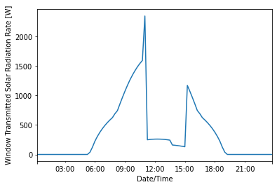
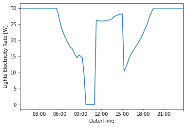

How to control CFS and lighting in E+ Model?
Import required Python libraries
import datetime
import json
import os
from pathlib import Path
import sys
from frads import epjson2rad, eprad, parsers, matrix, methods, sky, types, window
import pandas as pd
Need to make sure EnergyPlus is in sys.path in order to load pyenergyplus.api
srcloc = {'win32': 'C:\\', 'darwin': '/Applications', 'linux': '/usr/local'}
dname = [os.path.join(srcloc[sys.platform], d) for d in os.listdir(srcloc[sys.platform]) if d.startswith('EnergyPlus')]
ephome = dname.pop()
if ephome not in sys.path:
sys.path.append(ephome)
from pyenergyplus.api import EnergyPlusAPI
Load EnergyPlus(E+) model
The example idf file is from the EnergyPlus ExampleFiles directory. The building is 15.24m X 15.24m, single zone with one south-facing window.
Initialize an E+ model by calling eprad.load_epmodel with an input of idf or epjs file.
idf_path = Path("1ZoneUncontrolled_win_1.idf")
api = EnergyPlusAPI()
epmodel = eprad.load_epmodel(idf_path, api)
Add CFS objects to E+ model
Create an unshaded glazing system, consisted of one layer of 6mm clear glass. Initialize a glazing system by calling window.GlazingSystem(). Then, use add_glazing_layer and add_shading_layer respectively, to add glazing and shading layer to the glazing system.
gs_unshaded = window.GlazingSystem()
gs_unshaded.add_glazing_layer("products/CLEAR_6.DAT")
This is how you get the name of the glazing system.
gs_unshaded.name
'Generic Clear Glass'
Create a shaded glazing system, consisted of one layer of 6mm clear glass and one layer of shading: 2011-SA1.
gs_shaded = window.GlazingSystem()
gs_shaded.add_glazing_layer("products/CLEAR_6.DAT")
gs_shaded.add_shading_layer("products/2011-SA1.XML")
gs_shaded.name
'Generic Clear Glass_Satine 5500 5%, White Pearl'
After the adding glazing and shading layers to the glazing system, compute solar and the solar and photopic results using compute_solar_photopic_results. Need to re-compute each time when the glazing system layering composition changes.
gs_unshaded.compute_solar_photopic_results()
gs_shaded.compute_solar_photopic_results()
Add the unshaded and shaded glazing systems to E+ model by calling add_cfs.
epmodel.add_cfs(gs_unshaded)
epmodel.add_cfs(gs_shaded)
Add lighting objects to E+ model
Use add_lighting to add a lighting object for each of the zones in the building.
epmodel.add_lighting()
This is a list of attributes of the EPModel class
epmodel.windows
['Zn001:Wall001:Win001']
epmodel.cfs
['Generic Clear Glass', 'Generic Clear Glass_Satine 5500 5%, White Pearl']
epmodel.lighting_zone
['Light_ZONE ONE']
epmodel.zones
['ZONE ONE']
Initialize Radiance model
Create a Radiance model by calling epjson2rad.epjson2rad and passing in an epjs and epw files. The epjs file can be accessed by calling epmodel.epjs. The epjson2rad.epjson2rad function creates an Objects directory for material and geometry primitives and a Resources directory for transmission matrices (xml files). The epjson2rad.epjson2rad function also generates a config file, which contains information about simulation controls setting, site, model, and raysender. Use methods.three_phase to perform the three-phase method and generate the view and daylight matrices under the Matrices directory. Finally, load the view, daylight, and transmission matrices with load_matrix.
zone = "ZONE_ONE"
floor = "Zn001:Flr001"
wall_wndo = "Zn001:Wall001"
# generate Radiance model
# generate view, daylight, and transmission matrices
epjson2rad.epjson2rad(epmodel.epjs, epw="USA_CA_Oakland.Intl.AP.724930_TMY3.epw")
cfg_file = Path(f"{zone}.cfg")
config = parsers.parse_mrad_config(cfg_file)
config["SimControl"]["no_multiply"] = "true"
with methods.assemble_model(config) as model:
mpath = methods.three_phase(model, config)
# load matrices
vmx_window1 = matrix.load_matrix(mpath.pvmx[f"{floor}{wall_wndo}_window"])
dmx_window1 = matrix.load_matrix(mpath.dmx[f"{wall_wndo}_window"])
tmx_unshaded = matrix.load_matrix(f"Resources/Generic Clear Glass.xml")
tmx_shaded = matrix.load_matrix(f"Resources/Generic Clear Glass_Satine 5500 5%, White Pearl.xml")
Define controller function for CFS construction states and daylight dimming
Control fenestration construction based on time; the window is shaded from 11:00 to 15:00; otherwise, unshaded. The nominal lighting power of the light is 30W, controlled with linear daylight dimming based on the workplane illuminance. The workplane illuminance at each timestep is computed by calling matrix.multiply_rgb and pass in the view, trasmission, daylight, and sky matrices. Sky matrix is generated by calling sky.genskymtx and passing in a WeaData and WeaMetaData objects.
Data is accessed through handles, which can be accessed by calling the handles attribute of the EnergyPlusSetup class. Call get_variable_value and pass in a variable handle to get a variable value (e.g. Direct normal irradiance and diffuse horizontal irradiance). Call actuate and pass in an actuactor handle and value to set the actuator value.
def controller(state):
dni_thld = 800
nominal_lighting_power = 30
shade_names = {
0: "Generic Clear Glass",
1: "Generic Clear Glass_Satine 5500 5%, White Pearl",
}
dt = ep.get_datetime()
direct_normal_irradiance = ep.get_variable_value(
ep.handles.direct_normal_irradiance
)
diffuse_horizontal_irradiance = ep.get_variable_value(
ep.handles.diffuse_horizontal_irradiance
)
## control CFS construction
window_handle = ep.handles.window_actuators["Zn001:Wall001:Win001"]
# change the fenestration to shaded
if dt.hour > 10 and dt.hour < 15:
_shades = 1
tmx = tmx_shaded
else:
_shades = 0
tmx = tmx_unshaded
ep.actuate(
window_handle, ep.handles.complex_fenestration_state[shade_names[_shades]]
)
## control lights
light_handle = ep.handles.light_actuators["Light_ZONE ONE"]
# create WeaData object to create smx
weadata = types.WeaData(
time=dt, dni=direct_normal_irradiance, dhi=diffuse_horizontal_irradiance
)
# initialize sky/sun matrix
smx = matrix.load_matrix(sky.genskymtx([weadata], meta, mfactor=4))
# get workplane illuminance
wpi = matrix.multiply_rgb(vmx_window1, tmx, dmx_window1, smx, weights=[47.4, 119.9, 11.6])
avg_wpi = wpi.mean()
# lighting power, assuming linear dimming curve
lighting_power = (1 - min(avg_wpi / 500, 1)) * nominal_lighting_power
ep.actuate(light_handle, lighting_power)
Initialize pyenergyplus.api to simulate
Register the controller functions to be call back by EnergyPlus by calling set_callback and passing in a callback point and function. To simulate, use run with optional parameters: -w weather file, -d output directory, and -p output prefix (default: eplus).
Refer to Application Guide for EMS for descriptions of the calling points .
"The calling point called “BeginTimestepBeforePredictor” occurs near the beginning of each timestep
but before the predictor executes. “Predictor” refers to the step in EnergyPlus modeling when the
zone loads are calculated. This calling point is useful for controlling components that affect the
thermal loads the HVAC systems will then attempt to meet. Programs called from this point
might actuate internal gains based on current weather or on the results from the previous timestep.
Demand management routines might use this calling point to reduce lighting or process loads,
change thermostat settings, etc."
with eprad.EnergyPlusSetup(api, epmodel.epjs) as ep:
# create WeaMetaData object to create smx
loc = list(epmodel.epjs["Site:Location"].values())[0]
meta = types.WeaMetaData(
city="",
country="",
elevation=loc["elevation"],
latitude=loc["latitude"],
longitude=0 - loc["longitude"],
timezone=(0 - loc["time_zone"]) * 15,
)
ep.set_callback("callback_begin_system_timestep_before_predictor", controller)
ep.run(weather_file="USA_CA_Oakland.Intl.AP.724930_TMY3.epw", output_prefix="1ZoneUncontrolled_win_1")
Load and visualize results
Use pd.read_csv to read the output csv file.
df = pd.read_csv(
"./1ZoneUncontrolled_win_1out.csv", index_col=0, parse_dates=True, date_parser=eprad.ep_datetime_parser
)
Plot data on 07/21
df_0721 = df.loc["1900-07-21"]
Plot Window Transmitted Solar Radiation Rate. From 11:00 to 15:00, the window is shaded, where the fenestration construction is Generic Clear Glass_Satine 5500 5%, White Pearl. Otherwise, the window is unshaded, where the fenestration construction is Generic Clear Glass. The drop in transmitted solar radiation from 11:00 to 15:00 reflects the change in fenestration state from unshaded to shaded.
df_0721[
"ZN001:WALL001:WIN001:Surface Window Transmitted Solar Radiation Rate [W](TimeStep)"
].plot(ylabel=" Window Transmitted Solar Radiation Rate [W]")
<AxesSubplot:xlabel='Date/Time', ylabel=' Window Transmitted Solar Radiation Rate [W]'>

Plot lighting electricity rate. The light is linearly dimmed in response to the workplane illuminance. Before the sunrise and after the sunset, the light is in full power. Then, in the morning from 5:30 to 11:00, when the window is unshaded, the lighting power decreases as the workplane illuminance increases; likewise inversely happened in the afternoon from 15:00 until the sunset. From 11:00 to 15:00, the lighting power is higher because the workplane illuminance decreases with the window changed to shaded.
df_0721["LIGHT_ZONE ONE:Lights Electricity Rate [W](TimeStep)"].plot(
ylabel="Lights Electricity Rate [W]"
)
<AxesSubplot:xlabel='Date/Time', ylabel='Lights Electricity Rate [W]'>
